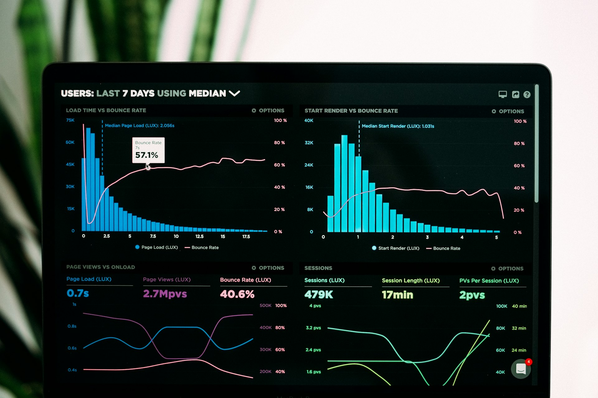
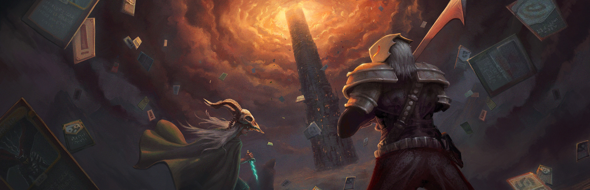
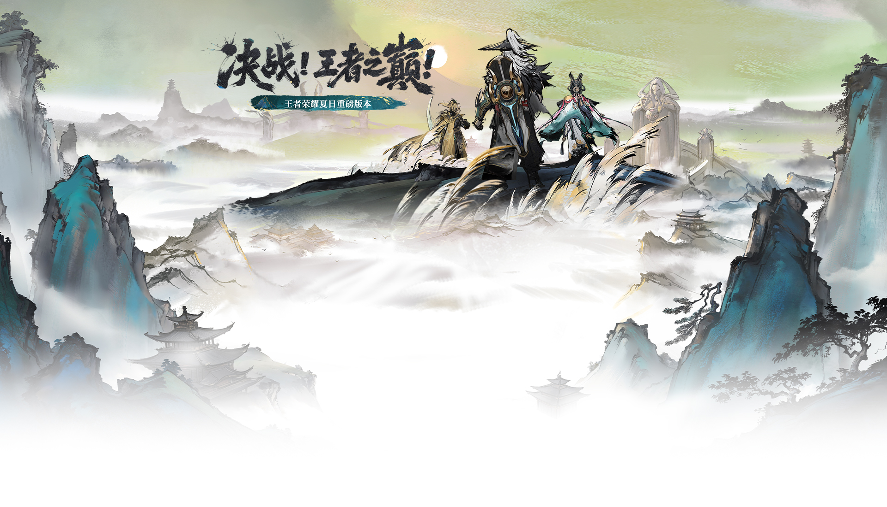
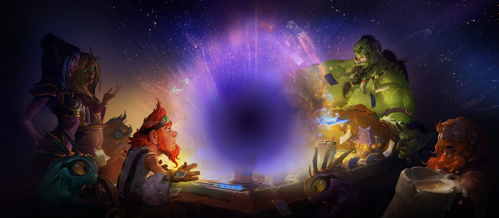

为什么一局结束总想"再来一局"？四款游戏靠什么赚钱？我们怎样验证一个关于"好玩"的猜想？

两个人的团队，用"局内构筑卡组"和"意图系统"定义了一个全新的游戏子类型。

从"英雄战迹"到亚运赛场，十年时间走完了中国数字文化产业从未有过的一次跨越。
地图理解、经济管理、道具配合与团队沟通，才是决定回合胜负的东西。

十一个职业、一套精炼的关键词、一间永远亮着灯的旅店。
本站由四个游戏栏目和一个研究栏目组成。游戏栏目按"是什么 → 怎么玩 → 为什么好玩"的顺序组织； 研究栏目则跳出单款游戏，讨论它们共通的机制、商业模式与研究方法。
不介绍某一款游戏，而是研究游戏本身：机制、商业化、以及怎样做一次可验证的游戏体验观察。
四名角色、一套动态牌组、二十级进阶。看两个开发者如何用设计而不是美术资源站住脚。
六大职业、铭文与出装、段位与赛季。一款手游如何长成一项竞技运动。
七张经典地图、九把常用枪械、一整套投掷物。附基础操作与急停、静步的练习方法。
十一个职业、精炼的卡牌关键词、标准与狂野两条时间线，以及一间旅店里的十年。
如果你只想快速找到某一页，这里列出了全站所有页面与栏目结构。
先看 CS2 的新手指南，再对照王者荣耀的六大职业与出装逻辑，理解"站位"和"资源"在团队游戏里的意义。
直接进游戏研究栏目，那里有四款游戏的横向对照，以及关于成瘾机制与商业模式的讨论。
杀戮尖塔的"动态牌组"与炉石传说的"关键词系统"，是两种完全不同的卡牌设计思路，可以对照着看。